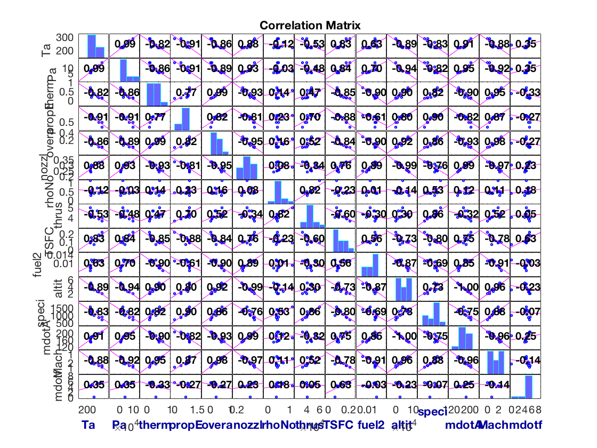

Main Routine
This file contains the main routine for the J58 Thermal Model.
All other files are required to be in the same directory.
Contents
Routine Body
Pressures [Pa] Temperatures [ºK] mdot_a.ENGLISH [lb/s] mdot_a.SI [kg/s]
% Generating Condition Vectors [altitude, Mach, AB] = condition_vectorizer(); % Inlet Model [P_a, P0A, P02, T_a, T02, mdot_a_nonbleed, V_inf] = inlet(altitude, Mach, 0); % Shock Trap Bleed Model [P02, T02, mdot_a] = shock_trap(P02, T02, mdot_a_nonbleed, Mach); % Compressor Model [P03, T03, mdot_a, eta_c] = compressor(P02, T02, mdot_a); % Burner Model [P04, T04, fuel2air, mdot_a, mdot_e1, mdot_f, LHV] = burner(P03, T03, mdot_a); % Turbine Model [P05, T05] = turbine(T02, T03, P04, T04, fuel2air); % Afterburner Model [P06, T06, mdot_e2, mdot_f2, ab_fuel2air] = afterburner(P05, T05, AB, mdot_e1); total_fuel2air = struct('ENGLISH', (mdot_f2.ENGLISH+mdot_f.ENGLISH)./mdot_a.ENGLISH,... 'SI', (mdot_f2.SI+mdot_f.SI)./mdot_a.SI); %total % Nozzle Model [P8, T8, V8] = nozzle(P06, T06, AB, T02, P_a);
Postprocessing
Nozzle Area
rho_nozzle = P8./(287.*T8); % kg/m^3 total_mdot = struct('ENGLISH', (mdot_a_nonbleed.ENGLISH + mdot_f.ENGLISH + mdot_f2.ENGLISH),... 'SI', (mdot_a_nonbleed.SI + mdot_f.SI + mdot_f2.SI)); nozzle_area = (mdot_a_nonbleed.SI + mdot_f.SI + mdot_f2.SI)./(rho_nozzle + V8); % m^2 % Thrust [thrust_SI] = thrust(mdot_a.SI, total_fuel2air.SI, ... V8,V_inf, P_a, P8, nozzle_area); % Newtons thrust_ENGLISH = 0.224808943.* thrust_SI; % lbf % Propulsive Efficiency [prop_efficiency] = propulsive_efficiency(mdot_a_nonbleed.SI,... total_fuel2air.SI,... V8, V_inf, thrust_SI); % Thermal Efficiency thermal_efficiency = ((thrust_SI.*V_inf) + (0.5.*mdot_a.SI.*(1+total_fuel2air.SI).*((V8-V_inf).^2)))./((LHV.*1000).*(mdot_f2.SI+mdot_f.SI)); % Overall Efficiency overall_efficiency = prop_efficiency .* thermal_efficiency; % TSFC TSFC = tsfc(mdot_a.SI, total_fuel2air.SI.*3600, thrust_SI); % TSFC ENGLISH TSFC_ENGLISH = tsfc(mdot_a.ENGLISH, total_fuel2air.ENGLISH.*3600, thrust_ENGLISH); % Impulse Impulse = impulse(mdot_a_nonbleed.SI, total_fuel2air.SI, thrust_SI); % Specific Thrust specific_thrust = (thrust_SI)./(mdot_a_nonbleed.SI); fprintf('V_inf [mph]\tV_ext[mph]\tMach\tEta_T\tEta_P\tEta_o\tThrust [lbf]\tThrust [kN]\tTSFC [kg/h/N]\n') for ii = [1:13] fprintf('%3.2f\t\t%3.2f\t\t%3.2f\t%4.4f\t%4.4f\t%4.4f\t%6.1f\t\t%3.2f\t\t%4.4f\n',V_inf(ii)*2.24, V8(ii)*2.24, Mach(ii), thermal_efficiency(ii), prop_efficiency(ii), overall_efficiency(ii), thrust_ENGLISH(ii), thrust_SI(ii)/1000, TSFC(ii)) end
V_inf [mph] V_ext[mph] Mach Eta_T Eta_P Eta_o Thrust [lbf] Thrust [kN] TSFC [kg/h/N] 0.00 1444.47 0.00 0.1142 0.0000 0.0000 33240.9 147.86 0.2159 269.99 1440.87 0.35 0.1309 0.4249 0.0556 40073.4 178.26 0.1786 521.09 1394.88 0.75 0.3827 0.7484 0.2864 40754.5 181.29 0.0669 850.62 1437.86 1.25 0.2848 0.9334 0.2659 53255.1 236.89 0.1177 1321.91 1430.31 2.00 0.4924 0.9984 0.4916 45657.3 203.09 0.0989 1454.10 1430.31 2.20 0.5657 0.9999 0.5657 46037.1 204.78 0.0946 1462.97 1430.31 2.20 0.5341 0.9999 0.5341 41189.0 183.22 0.1008 260.99 1419.95 0.35 0.1254 0.4162 0.0522 37542.9 167.00 0.1840 722.54 1433.22 1.00 0.2411 0.8843 0.2132 53454.5 237.78 0.1247 1255.82 1430.31 1.90 0.5613 0.9964 0.5593 60061.3 267.17 0.0826 1388.01 1430.31 2.10 0.5352 0.9998 0.5351 46773.4 208.06 0.0954 604.60 1377.53 0.90 0.1796 0.8197 0.1472 41613.8 185.11 0.1511 1656.20 1430.31 2.50 0.6940 0.9949 0.6905 47057.5 209.32 0.0882
Viz
render = false; if render figure('Name','PressureVStation') plot([P_a; P0A; P02; P03; P04; P05; P06; P8]) xlabel('Station') ylabel('P [Pa]') legend('Validation','Takeoff (1)', 'Refueling Buddy (2)',... 'Climbing (3)', 'Concorde (4)',... 'YF12A (5)', 'A12Max (6)', 'Takeoff High (7)', 'LowestM1 (8)',... 'MA139XAA (9)', 'FrenchGriffon2 (10)', 'ConstantClimb (11)', 'Out Of Model (12)') grid on grid minor figure('Name','TemperatureVStation') plot([T_a; T_a; T02; T03; T04; T05; T06; T8]) xlabel('Station') ylabel('T [ºK]') legend('Validation','Takeoff (1)', 'Refueling Buddy (2)',... 'Climbing (3)', 'Concorde (4)',... 'YF12A (5)', 'A12Max (6)', 'Takeoff High (7)', 'LowestM1 (8)',... 'MA139XAA (9)', 'FrenchGriffon2 (10)', 'ConstantClimb (11)', 'Out Of Model (12)') grid on grid minor figure('Name','ThermalEfficiencyVV_inf') scatter(V_inf', thermal_efficiency') xlabel('V_{inf} [m/s]') ylabel('\eta_t') grid on grid minor figure('Name','ThermalEfficiencyVMach') scatter(Mach', thermal_efficiency') xlabel('Mach') ylabel('\eta_t') grid on grid minor figure('Name','PropulsiveEfficiencyVVinf') scatter(V_inf', prop_efficiency') xlabel('V_{inf} [m/s]') ylabel('\eta_p') grid on grid minor figure('Name','PropulsiveEfficiencyVMach') scatter(Mach', prop_efficiency') xlabel('Mach') ylabel('\eta_p') grid on grid minor figure('Name','OverallEfficiencyVV_inf') scatter(V_inf', overall_efficiency') xlabel('V_{inf} [m/s]') ylabel('\eta_o') grid on grid minor figure('Name','OverallEfficiencyVMach') scatter(Mach', overall_efficiency') xlabel('Mach') ylabel('\eta_o') grid on grid minor figure('Name','TSFCVMach') scatter(Mach, TSFC) xlabel('Mach') ylabel('TSFC [(kg/h)/N]') grid on grid minor figure('Name','SpecificThrustVMach') scatter(Mach, specific_thrust) xlabel('Mach') ylabel('Specific Thrust [N/(kg/s)]') grid on grid minor figure('Name','fVMach') scatter(Mach, total_fuel2air.SI) xlabel('Mach') ylabel('Fuel to Air Ratio') grid on grid minor figure('Name','ImpulseVMach') scatter(Mach, Impulse) xlabel('Mach') ylabel('Impulse') grid on grid minor end
Correlation
variable_table = array2table([T_a',... P_a',... thermal_efficiency',... prop_efficiency',... overall_efficiency',... nozzle_area',... rho_nozzle',... thrust_ENGLISH',... TSFC',... fuel2air',... altitude',... specific_thrust',... mdot_a_nonbleed.SI',... Mach',... mdot_f2.SI'], 'VariableNames',... {'Ta','Pa','thermalEff','propEff','overallEff',... 'nozzleaArea', 'rhoNozzle', 'thrustEnglish',... 'TSFC', 'fuel2air', 'altitude','specificThrust',... 'mdotA','Mach','mdotf'}); figure('Name','Correlation') corrplot(variable_table)